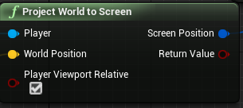
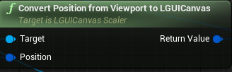

Project world position to LGUI's screen position
This is useful when we want to create a floating health bar on our character.
The main point is to use two nodes: One is Project World to Screen, which is UnrealEngine's default node:  Another is Convert Position from Viewport to LGUICanvas, which is provided by LGUICanvasScaler: 
| Property: | Function: |
|---|---|
| Target | A reference to LGUICanvasScaler object. |
| Position | Input position, which is output from Project World to Screen node. |
| Return Value | Result LGUI's screen space position. Note left bottom is zero position, so for UIItem who need to use the result value, should set Anchors to Left Bottom, and the parent of UIItem should set to full screen size. |
We can link these nodes like the screen shot below:
 Healthbar is a UIItem represent for a healthbar.
Healthbar is a UIItem represent for a healthbar.